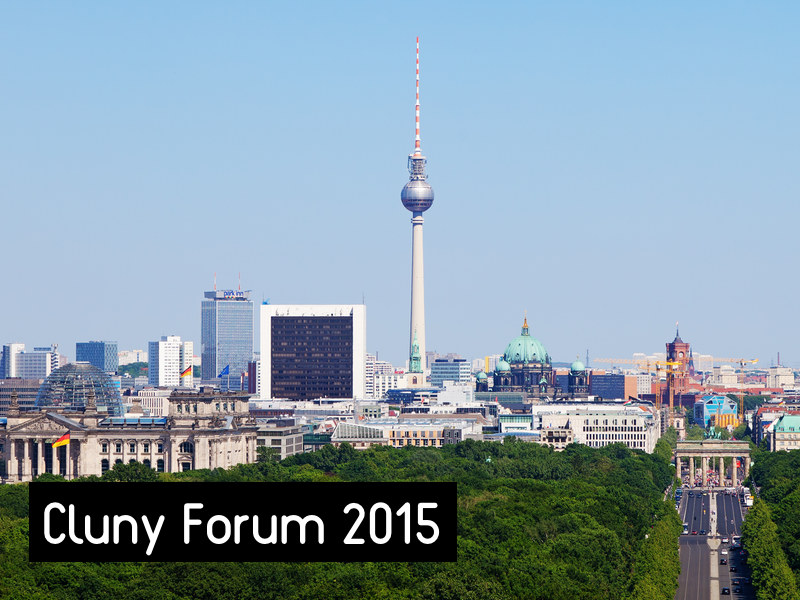
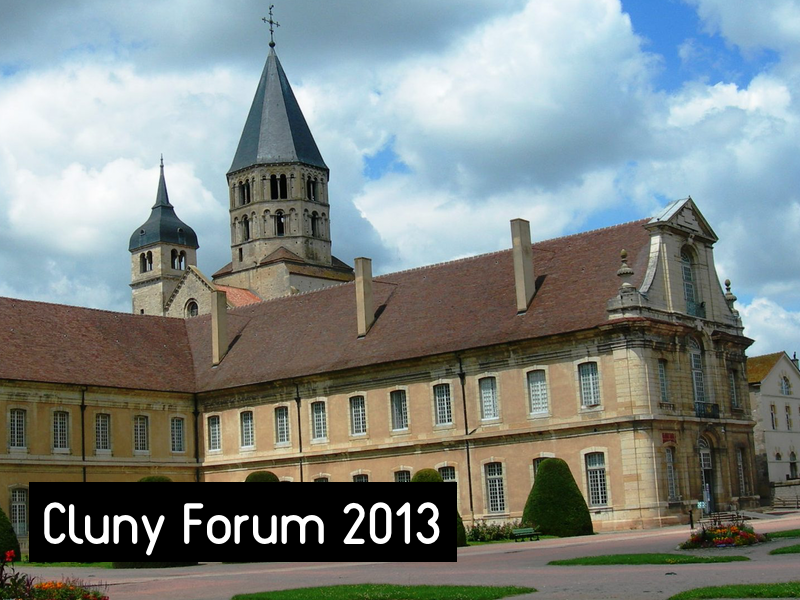

L'histoire du Cluny Forum est encore relativement jeune, avec "seulement" deux éditions, la première à Cluny, en France et la seconde à Berlin. Toutefois, avec chaque édition, le Trait d'Union Franco-Allemand essayer d'approfondir un peu plus la coopération sociale et économique entre la France et l'Allemagne. Le premier Cluny Forum s'est tenu à Cluny, en Bourgogne, dans le Centre de Conférences Internationales de Cluny. La ville a été choisie pour son histoire liée à l'esprit européen et à la question de l'industrie et de l'énergie qui nous concerne tous. La logique derrière ce premier forum était de montrer que l'innovation vient aussi des périphéries, loin des centres tels que Berlin et Paris. En 2015 ensuite, le Cluny Forum a été organisé à Berlin, un de ces centres. Cette deuxième édition a rencontré beaucoup de succès avec le développement de projets intéressants qui sont nés durant cette édition 2015.
La prochaine édition du Cluny Forum en 2016 aura lieu à Lyon. Rejoignez-nous et faites partie du futur des relations franco-allemandes !

Lieu: Lyon
|

Lieu: Berlin
|

Lieu: Cluny
|
|---|